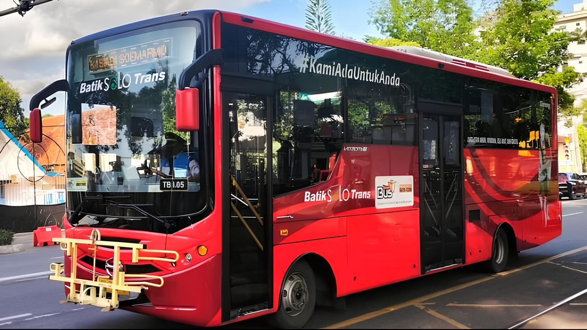

Selamat Datang
Dashboard Halte Bus BST dan Prasarana Pendidikan Kota Surakarta

Batik Solo Trans (BST) adalah layanan bus raya terpadu yang beroperasi di wilayah Kota Surakarta. BST memiliki beberapa koridor yang melayani berbagai rute di dalam kota dan sekitarnya. Enam koridor utama BST meliputi:
- Koridor 1: Bandara Adi Soemarmo ⇌ Terminal Palur
- Koridor 2: Sub Terminal Kerten ⇌ Terminal Palur
- Koridor 3: Terminal Kartasura ⇌ RS. Jiwa / Taman Lansia
- Koridor 4: Terminal Kartasura ⇌ Terminal Palur
- Koridor 5: Terminal Kartasura ⇌ Simpang Sidan
- Koridor 6: Terminal Tirtonadi ⇌ RS Indriati Solo Baru
Informasi Dashboard
Berikut ini merupakan komponen utama dari evaluasi transportasi publik terhadap pendidikan di Kota Surakarta.
Sebaran Halte Bus BST
Menunjukkan peta lokasi halte bus dan koridor sistem transportasi Batik Solo Trans.
Aksesibilitas Prasarana Pendidikan
Aksesibilitas fasilitas pendidikan di Kota Surakarta berdasarkan layanan transportasi publik Batik Solo Trans.
Rekomendasi Jalur BST Baru
Sebagai upaya peningkatan keterjangkauan layanan transportasi publik bagi sektor pendidikan.